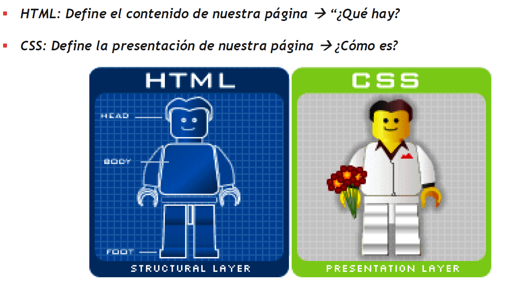

Introducción a CSS
En las primeras versiones de HTML, utilizabamos lo que son propiedades disponibles
enlas etiquetas HTML, para poder asignar lo que se conoce como la "apariencia"
de las paginas web.
En las nuevas páginas HTML, principalmente las que usamos con la normativa
HTML5, no "suelen" usar dichas propiedades para aplicar la apariencia a las
páginas web.
En este caso, lo que utilizaremos es un lenguaje de marcado que se llama CSS, y que
significan "Hojas de Estilo en Cascada" (Cascading Style Sheet)
Podemos establecer por lo tanto, que en la programación web vamos a tener como
dos partes:
- Estructura del código (estructura de la página web): etiquetas HTML
- Apariencia del código (cómo queremos que sea el código que nosotros
hemos introducido en la web, en cuanto a colores, tamaño, organización, etc.)
propiedades CSS que vamos a aplicar a las etiquetas HTML
Es decir, por un lado tendremos toda la parte de estructura (HTML) y por otra,
tendremos la parte de apariencia (CSS)

Los motivos de porqué tenemos separado el CSS y el HTML son los siguientes:
- De esta manera podemos tener por un lado el HTML y el CSS, y en caso
de que tuviéramos que modificar cualquier tipo de cosa, lo tendríamos
todo mucho más organizado y sería mucho más fácil de poder realizarlo.
- Si nosotros utilizamos CSS para maquetar páginas web que van a ser
visualizadas en distintos dispositivos, esta adaptación es mucho más
fácil que si lo tuvieramos las propiedades HTML realizando esta labor.
- Antes hacíamos páginas web con tablas, lo que hacía que el poder aplicar
métodos responsive (ajustables a distintos tamaños de tablas) fueran
inviables...
- CSS en este aspecto, facilita el que podamos diseñar páginas de distintas
estructuras, formas y apariencias que sean visualmente más atractivas
y funcionales.
Versiones de CSS y tipos de CSS que podemos aplicar.
La versión actual de CSS, es la versión CSS3.
Este es un estandar que data del año 2011, y que es la que actualmente se está
empleando en prácticamente el 100% de las páginas web que hay/existen en internet.
En base a esto, podemos comentar que las ventajas que tiene CSS son las siguientes:
- Mayor control de la presentación del sitio web
- Si necesitamos hacer modificaciones de presentación, lo hacemos en un sólo
lugar y no tenemos que editar todos los elementos HTML por separado.
- Mayor legibilidad: más fácil de interpretar y entender
- Se reduce la duplicidad de estilos en diferentes lugares, por lo que la información
a transmitir es considerablemente menor (las páginas se descargan de manera mucho más rápidas)
- Es más fácil crear versiones diferentes de presentación para otros tipos de dispositivos:
por ejemplo, una misma página web se puede visualizar en una tablet, en un smartphone o en un PC
siendo su diferencia en cuanto a apariencia mínima.
Desventajas de CSS3
- A veces, dependiendo del navegador que vayamos a utilizar para visualizar
nuestras webs, puede que los elementos a los que hemos aplicado CSS, se
vean de una manera u otra.
- El uso de tablas no permiten crear diseños complejos de forma mucho más sencilla
que si utilizaramos CSS directamente.
Tipos de CSS que podemos aplicar/utilizar en HTML
En HTML, podemos utilizar o tener, tres tipos de CSS para utilizar en nuestros diseños.
- CSS Externo: Es aquel que va a estar contenido en archivo CSS con una extensión .css
- CSS Interno: Es aquel que va a estar insertado directamente en el documento HTML
- CSS Embebido: Es aquel que va a ser aplicado directamente a la etiqueta HTML a la que queramos
aplicar las propiedades y características CSS.
Ejemplo de CSS Externo
El CSS Externo, será un documento con extensión .css, que estará vinculado al HTML mediante la siguiente
estructura:
- Crear el archivo externo css: style.css
- Vincular el archivo .css, al documento HTML. Para ello, utilizaremos
la etiqueta link seguido de rel="stylesheet" href=".css"
rel=stylesheet, indica que vamos a utilizar un documento CSS para dar características de CSS
a nuestro documento HTML. href sirve para vincular la ruta en donde se encuentra nuestro documento
.css con el fin de tenerlo localizado para poderlo aplicar a nuestro HTML.
- TODO esto, se pone dentro de las etiquetas head del documento html.
(Ejemplo CSS Externo del documento que tenemos adjunto)
Ejemplo de CSS Interno
Para crear un CSS Interno, tendremos que tener en cuenta las siguientes características:
- Dentro de la etiqueta head, tendremos que insertar la etiqueta style
- En la etiqueta style, deberemos insertar las características y propiedades
CSS de la misma manera que hemos hecho con el CSS Externo.
(Ejemplo CSS Interno del documento que tenemos adjunto)